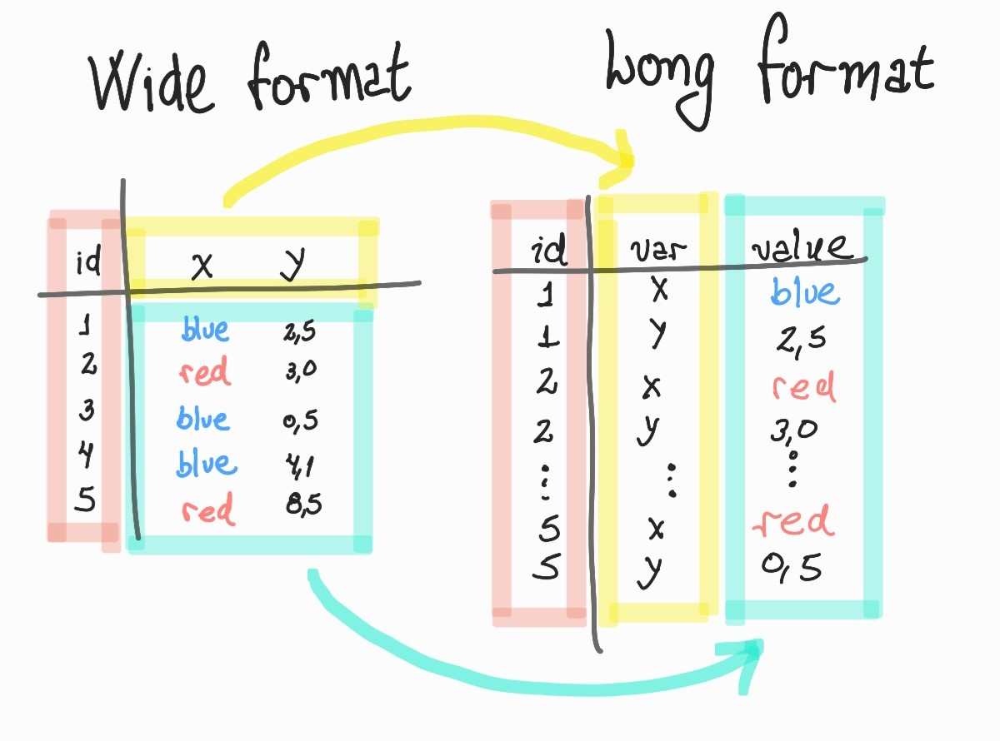

- ter 26 julho 2022
- Data Analysis
- #Python, #Pandas, #dataframe reshaping
TL;DR¶
- Formato wide table
- Formato long table
- Para que serve a função
pd.wide_to_long - Parâmetros da função
- Exemplos
- Outros métodos e funções relacionados.
Documentação: pd.wide_to_long
Exemplos mencionados no artigo também estão disponíveis no Google Collab.
Introdução¶
Este artigo discute a utilização da função pd.wide_to_long da biblioteca Pandas.
“Wide tables” e “long tables” referem-se a como os dados estão organizados nas tabelas. Não sei se existe uma tradução melhor, mas eu vou adotar os conceitos de tabela no formato amplo (wide) e tabela no formato longo (long).
Formato wide table (Formato amplo?)¶
A organização da tabela no formato amplo é, possivelmente, o que mais naturalmente vem a mente quando pensamos em tabelas.
Esse formato possui as seguintes características:
- Cada linha corresponde a uma observação de um fenômeno (dados de uma pessoa, de uma transação bancária, etc.)
- Cada coluna guarda o valor de um respectivo atributo dessa observação. Por exemplo, no caso de uma pessoa, poderíamos ter uma coluna para a altura, outra para o peso, outra para a data de nascimento.
Formato long table¶
Já no formato longo os atributos de uma observação (isto é, o que seria as colunas) estão organizados como registros de uma tabela, isto é, distribuídos pelas linhas da tabela. Um exemplo básico seria esse:

Mas para que serve a função pd.wide_to_long?¶
O próximo exemplo é baseado em um exemplo existente na documentação, mas eu inventei um contexto a mais para esses dados.
No mundo real, e pelas mais diferentes razões, os dados podem estar organizados nas mais variadas formas.
Imagine por exemplo, que por alguma razão, os nomes das colunas de uma tabela codificam uma informação importante, e queiramos utilizar essa informação como valores na nossa tabela.
Por exemplo, imagine a seguinte tabela com informações sobre a quantidade de vendas de dois produtos ‘A’ e ‘B’, durante cinco semanas dos anos de 2020 e 2021.
Os dados estão organizados na tabela com as seguintes colunas:
'A(weekly)-2020', 'A(weekly)-2021', 'B(weekly)-2020', 'B(weekly)-2021', 'week'
As colunas com informações do produto seguem o seguinte padrão: A ou B para identificar o produto seguido da expressão (weekly); um carácter de separação ‘-’; mais o valor que representa o ano (2020 ou 2021).
Os nomes das colunas podem ser divididos em duas partes que, para seguir a nomeação dada pela documentação, chamaremos de prefixo e sufixo.
Os prefixos seriam as expressões ‘A(weekly)’ e ‘B(weekly)’ que codificam a informação do tipo do produto.
Já os sufixos seriam os valores para os anos: 2020 e 2021.
Então, antes de seguir a leitura, note que identificamos nos nomes das colunas:
- Um prefixo: ‘A(weekly)’ e ‘B(weekly)’
- Um carácter de separação: ‘-’
- Um sufixo: os valores
Parâmetros da função¶
De acordo com a documentação, a função pd.wide_to_long possui os seguintes parâmetros:
- df é o dataframe a ser transformado.
- stubnames (str ou uma lista) indica os valores dos prefixos presentes nos nomes das colunas, que serão utilizados para transformar o dataframe. Uma definição da palavra stub pode ser encontrada no dicionário Cambridge;
- i (str ou uma lista) indica as colunas que serão utilizadas com identificadores (id) das observações, essas colunas serão transformadas em índices do dataframe retornado.
- j (str) : indica o nome da coluna que será criada com os valores identificados pelos sufixos
- sep : indica o caractere de separação entre os prefixos e os sufixos dos nomes das colunas.
- suffix: aceita uma expressão regular que será utilizada para a identificação dos sufixos;
- O valor padrão é
\d+que captura valores numéricos. - Esse parâmetro pode ser alterado para
\w+que captura strings
- O valor padrão é
Particularmente, eu tenho a impressão que a biblioteca pandas poderia ser muito mais consistente na escolha dos nomes dos parâmetros. Porém, eu entendo que o desenvolvimento de qualquer software é uma atividade dinâmica que envolve diversas pessoas, durante um longo período de tempo, e ter essa consistência não é uma tarefa simples.
De qualquer forma, eu não acho que o nome desses parâmetros (i e j) sejam bons indicadores do que eles são. Repare que o parâmetro i pode receber uma string ou uma lista, mas o parâmetro j só recebe uma string, que é o nome da nova (e única) coluna criada. À primeira vista, isso pareceu meio confuso para mim.
Exemplos de uso¶
import pandas as pd
import numpy as np
df = pd.DataFrame({'A(weekly)-2020': [10, 23, 59, 90, 2, 8],
'A(weekly)-2021': [11, 77, 34, 8, 12, 45],
'B(weekly)-2020': [5, 44, 33, 22, 1, 32],
'B(weekly)-2021': [32, 56, 43, 12, 67, 44],
'week' : [1, 2, 3, 4, 5, 6]})
df
df.columns
# Neste caso não seria necessário passar o valor do parâmetro `suffix` já que por padrão ele é '\d+'
pd.wide_to_long(df, stubnames=['A(weekly)', 'B(weekly)'], i='week', j='year', sep='-', suffix='\d+')
Para transformar essa tabela do formato longo para o amplo (wide), podemos utilizar o método unstack, como mostra o exemplo a seguir.
df2 = _ # captura a resposta da célula anterior
df2.unstack()
Um exemplo avançado do uso do parâmetro suffix¶
A página da documentação menciona rapidamente um caso de uso alternativo para o uso parâmetro suffix. Na verdade, essa menção encontra-se na própria descrição do parâmetro suffix.
Imagine que temos dois produtos ‘A’ e ‘B’ e três canais de anúncio: TV, internet e rádio. Agora, digamos que estejamos interessados somente nos dados para dois canais de anúncio: TV e internet.
Podemos utilizar o poder das expressões regulares para transformar os dados referente a esses dois canais de vendas e deixar o terceiro intacto.
Neste caso, basta definir o parâmetro suffix com o seguinte valor suffix=‘(tv|internet)’.
df3 = pd.DataFrame({'A-tv': np.random.randint(0, 100, size=5),
'A-internet': np.random.randint(0, 100, size=5),
'B-tv': np.random.randint(0, 100, size=5),
'B-internet': np.random.randint(0, 100, size=5),
'B-radio': np.random.randint(0, 100, size=5),
'id' : np.arange(5)
})
df3
pd.wide_to_long(df3, stubnames=['A', 'B'], i='id', j='type', sep='-', suffix='(tv|internet)')
Note que a coluna ‘B-radio’ ainda persiste no resultado final. Se não a desejamos, bastar aplicar o método drop nessa coluna.
(pd.wide_to_long(df3,
stubnames=['A', 'B'],
i='id',
j='type',
sep='-',
suffix='(tv|internet)')
.drop('B-radio', axis='columns'))
Dica para definir sutbnames com expressões regulares¶
Um outro exemplo rapidamente mencionado na documentação, é utilizar expressões regulares para identificar os prefixos de forma programática.
Por exemplo, voltemos ao dataframe do primeiro exemplo.
df
Poderíamos encontrar os valores dos prefixos utilizando o seguinte código:
stubnames = sorted(
set([match[0] for match in df.columns.str.findall(
r'[A-B]\(.*\)').values if match != [] ])
)
stubnames
Outras funções para transformação de um dataframe¶
A biblioteca pandas também oferece outras funções para alterar a estrutura de um dataframe conforme as nossas necessidades.
pd.melt- converte um dataframe do formato wide para o formato longo.pd.pivot- pode converter um dataframe do formato longo para wide.dataframe.pivot_table- possui quase a mesma função que a funçãopd.pivotporém realiza operações de agregação de dados por exemplo, calcular uma média, mediana, realizar uma contagem.dataframe.stackempilha colunas em índices;dataframe.unstackdesempilha índices em colunas.
Conclusão¶
Neste rápido tutorial, vimos o uso da função pd.wide_to_long.
Eu pessoalmente não conhecia essa função até bem pouco tempo atrás. Talvez porque o problema que essa função se propõe a resolver seja bem específico.